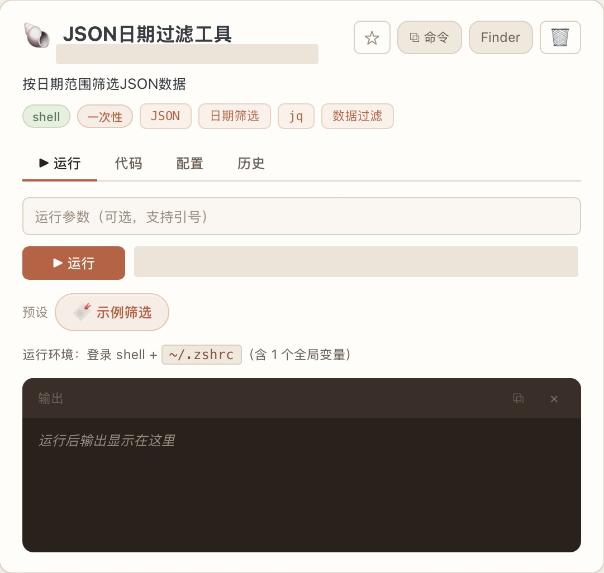
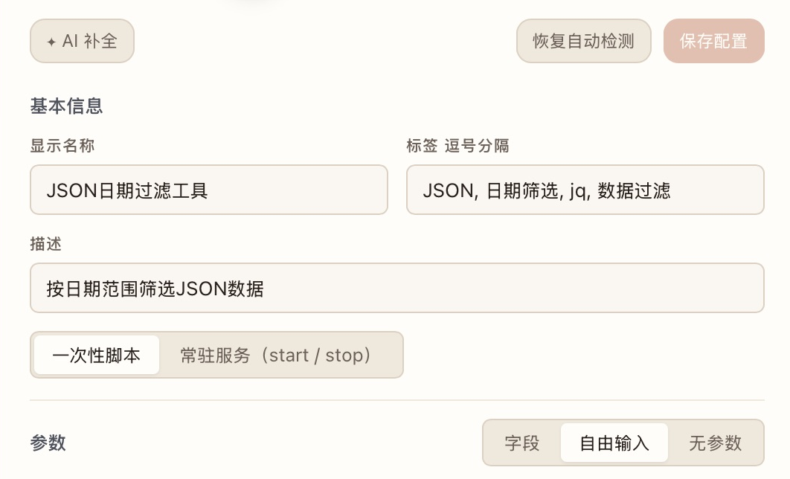

Hatch
产品手记 / 06
04 / 脚本工作台
让常用脚本，
可查找、可运行、
可回看。
目录扫描、参数预设、服务启停与定时任务。
环境变量、实时输出和运行历史，也集中管理。
定时任务
服务管理
参数与日志
运行与输出

配置与参数

⌘ K
搜索
预设 · 定时 · 历史
使用用户已有脚本；AI 起草的修改需确认后才写入。示例未执行。
Hatch / AI · VPN · 主机 · 脚本 · 备忘录
真实界面 · 局部脱敏